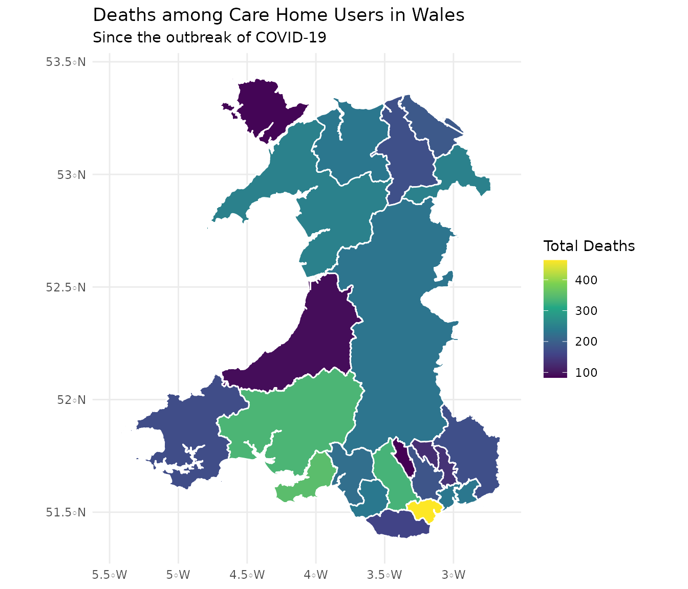

vignettes/mapping-statistical-geography.Rmd
mapping-statistical-geography.RmdThis vignette describes how to visualise data with maps using UK Statistical Geography resources from the Office for National Statistics (ONS).
The ONS maintains a registry of Statistical Geographies. These are areas in the UK, as defined by various geographic hierarchies (e.g. Council areas in an Administrative hierarhcy or NHS Regions in the Health hierarchy). Each area is issued with a code and an official name along with other information (e.g. what the parent area is or the geometry of the boundary).
The data comes from the ONS Geoportal which has an RDF representation available from ONS Geography Linked Data.
We’ll start by downloading some data. We’ll be looking at deaths in Welsh care homes.
We’re not going to use get_cube() but instead use SPARQL to extract a slice from the cube. Our query will filter the observations to find deaths by any cause and which took place in any location (i.e. in an Ambulance or Hospice etc). We’ll use the GROUP BY clause to SUM the count of deaths. This gives us a total number of deaths amoung care home users in Wales since records began.
wales_ch_deaths <- " PREFIX wgd: <http://gss-data.org.uk/data/gss_data/covid-19/wg-notifications-of-deaths-of-residents-related-to-covid-19-in-adult-care-homes#dimension/> PREFIX cause: <http://gss-data.org.uk/data/gss_data/covid-19/wg-notifications-of-deaths-of-residents-related-to-covid-19-in-adult-care-homes#concept/cause-of-death/> PREFIX location: <http://gss-data.org.uk/data/gss_data/covid-19/wg-notifications-of-deaths-of-residents-related-to-covid-19-in-adult-care-homes#concept/location-of-death/> SELECT ?geo (SUM(?deaths) AS ?total_deaths) WHERE { ?obs wgd:cause-of-death cause:total ; wgd:location-of-death location:total; <http://gss-data.org.uk/def/measure/count> ?deaths ; wgd:notification-date ?date ; wgd:area-code ?geo . ?geo <http://statistics.data.gov.uk/def/statistical-entity#code> <http://statistics.data.gov.uk/id/statistical-entity/W06> . } GROUP BY ?geo "
Then we can execute the query against the COGS SPARQL endpoint:
deaths <- query(wales_ch_deaths, "https://staging.gss-data.org.uk/sparql")
This is what the response looks like:
The geo column provides us with a character vector of URIs for statistical geographies. We can use these URIs to download descriptions of the geographies. We use get_geography() to download the descriptions from the ONS Linked Geography endpoint. Note we’re setting a flag to also download the boundaries.
geo <- get_geography(deaths$geo, include_geometry = T)
We can use these boundaries to visualise the data on a map.
The modern approach to spatial data in R is to create a simple feature sf object. This is a data frame with a particular column chosen to be the active geometry.
library(sf) #> Linking to GEOS 3.7.1, GDAL 2.2.3, PROJ 4.9.3 library(dplyr) #> #> Attaching package: 'dplyr' #> The following objects are masked from 'package:stats': #> #> filter, lag #> The following objects are masked from 'package:base': #> #> intersect, setdiff, setequal, union geo_sf <- st_as_sf(geo, wkt="boundary", crs="WGS84") %>% left_join(mutate(deaths, geo=uri(geo)), by=c("uri"="geo"))
Finally, we can use this sf object in ggplot to create a choropleth:
library(ggplot2) ggplot(geo_sf) + geom_sf(aes(fill=total_deaths), colour="white") + scale_fill_viridis_c("Total Deaths") + labs(title="Deaths among Care Home Users in Wales", subtitle="Since the outbreak of COVID-19") + theme_minimal()
